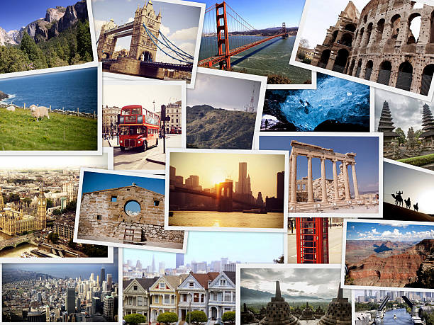

Travel Bucket List
- Bucket List 1: Travel to 30 different countries
- I want to visit 30 different countries before my 30th birthday. Traveling has always been a dream of mine, but I’ve never had the chance to go abroad. Exploring new cultures, tasting different cuisines, and meeting people from around the world excites me. This goal will push me to step out of my comfort zone and experience life beyond what I know. I believe it’s the perfect challenge because it will motivate me to work hard and make my dream a reality.
- Bucket List 2: Live in Singapore for 3 years
- After I graduate college, I want to move out of the Philippines to experience life in a different country. Singapore is my top choice because it is a global hub for technology and innovation. With its thriving IT industry, I believe it’s the perfect place for me to grow professionally and build a strong career. Living there for three years will allow me to adapt to a new culture, gain valuable work experience, and expand my opportunities. I see this as a major milestone in my journey toward success and personal growth.
